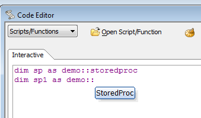

Classes in Namespaces
In Implementing an Xbasic Class V11 we defined a class:define class global StoredProc dim protected m_Connection as SQL::Connection dim public read protected write SPKeyword as C = "" ...
That class might conflict with someone else's StoredProc class sometime in the future. To avoid naming collisions, we can put the class into a namespace. For example, this class can become:
define class Demo::StoredProc dim protected m_Connection as SQL::Connection dim public read protected write SPKeyword as C = "" ...
We have removed the global keyword, as scope is not meaningful for namespaces in Alpha Five.
Save the revised class as Demo.StoredProc. Note that we did the class definition with two colons between the namespace and the class name, but saved the definition in a file with a period between the namespace and the class name. This may be confusing, but it is necessary as the Windows file system is not happy when it sees colons in file names except when they delimit volumes, for example C:\directory\filename.ext.
You can now use the class by DIMming it:
dim sp as Demo::StoredProc
As an additional benefit, once the class has been loaded, you will see the class in the namespace in a dropdown as soon as you type Demo:::

To ensure that your namespaces do not collide with other people's namespaces, you can prefix them with your company name or another unique identifier.
So, for example, you could define this class:
define class myCompany.myNamespace::mySampleClass dim sampleVar1 as c = "Hello, World!" function sampleMethod1 as v() ui_msg_box("sampleVar1",self.sampleVar1) end function end class
You would save this as myCompany.myNamespace.mySampleClass. Note that the different parts of the namespace name are separated by single periods, not by two colons.
In an interactive window you could then DIM and use the class:
dim sample as myCompany.myNamespace::mySampleClass ?sample.sampleVar1 = "Hello, World!"
See also
Xbasic with Classes V11Xbasic Class Syntax V11
Designing an Xbasic Class V11
Implementing an Xbasic Class V11
Testing and Using an Xbasic Class V11
Subclasses and Inheritance V11
Classes in Namespaces V11